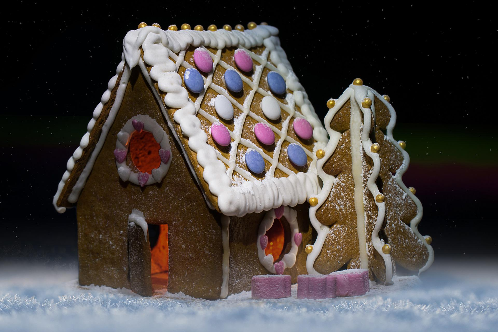
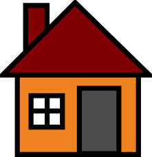

<!DOCTYPE html>
<html xmlns="http://www.w3.org/1999/xhtml" lang="sr-Cyrl"></html>
  <head>
    <meta charset="utf-8" />
    <meta name="viewport" content="width=device-width, initial-scale=1.0" />
<title>Предлог пројекта - Саградимо кућу &#8212; Пројектна настава за седми разред - Pygame</title>
    <link rel="stylesheet" href="_static/pygments.css" type="text/css" />
    <link rel="stylesheet" href="_static/basic.css" type="text/css" />
    <link rel="stylesheet" type="text/css" href="_static/activecode.css" />
    <link rel="stylesheet" type="text/css" href="_static/codemirror.css" />
    <link rel="stylesheet" type="text/css" href="_static/qchoice.css" />
    <link rel="stylesheet" type="text/css" href="_static/clickable.css" />
    <link rel="stylesheet" type="text/css" href="_static/pytutor.css" />
    <link rel="stylesheet" type="text/css" href="_static/modal-basic.css" />
    <link rel="stylesheet" type="text/css" href="_static/datafile.css" />
    <link rel="stylesheet" type="text/css" href="_static/dragndrop.css" />
    <link rel="stylesheet" type="text/css" href="_static/fitb.css" />
    <link rel="stylesheet" type="text/css" href="_static/matrixeq.css" />
    <link rel="stylesheet" type="text/css" href="_static/parsons.css" />
    <link rel="stylesheet" type="text/css" href="_static/lib/prettify.css" />
    <link rel="stylesheet" type="text/css" href="_static/poll.css" />
    <link rel="stylesheet" type="text/css" href="_static/showEval.css" />
    <link rel="stylesheet" type="text/css" href="_static/tabbedstuff.css" />
    <link rel="stylesheet" type="text/css" href="https://stackpath.bootstrapcdn.com/bootstrap/4.2.1/css/bootstrap.min.css" />
    <link rel="stylesheet" type="text/css" href="_static/video.css" />
    <link rel="stylesheet" type="text/css" href="_static/webgldemo.css" />
    <link rel="stylesheet" type="text/css" href="_static/webglinteractive.css" />
    <link rel="stylesheet" type="text/css" href="_static/karel.css" />
    <link rel="stylesheet" type="text/css" href="_static/notes.css" />
    <link rel="stylesheet" type="text/css" href="_static/gallery.css" />
    <link rel="stylesheet" type="text/css" href="_static/associations.css" />
    <link rel="stylesheet" type="text/css" href="_static/editor.css" />
    <link rel="stylesheet" href="_static/user-highlights.css" type="text/css" />
    <link rel="stylesheet" href="https://use.fontawesome.com/releases/v5.1.1/css/all.css" type="text/css" />
    <link rel="stylesheet" href="_static/bootstrap-4.0.0-dist/css/bootstrap.min.css" type="text/css" />
    <link rel="stylesheet" href="_static/flatly.min.css" type="text/css" />
    <link rel="stylesheet" href="_static/petlja-runestone.css" type="text/css" />
    <script id="documentation_options" data-url_root="./" src="_static/documentation_options.js"></script>
    <script type="text/javascript" src="_static/runestonebase.js"></script>
    <script type="text/javascript" src="_static/skulpt.min.js"></script>
    <script type="text/javascript" src="_static/skulpt-stdlib.js"></script>
    <script type="text/javascript" src="_static/jquery.js"></script>
    <script type="text/javascript" src="_static/underscore.js"></script>
    <script type="text/javascript" src="_static/doctools.js"></script>
    <script type="text/javascript" src="_static/language_data.js"></script>
    <script type="text/javascript" src="_static/jquery.highlight.js"></script>
    <script type="text/javascript" src="_static/bookfuncs.js"></script>
    <script type="text/javascript" src="_static/codemirror.js"></script>
    <script type="text/javascript" src="_static/xml.js"></script>
    <script type="text/javascript" src="_static/css.js"></script>
    <script type="text/javascript" src="_static/python.js"></script>
    <script type="text/javascript" src="_static/htmlmixed.js"></script>
    <script type="text/javascript" src="_static/javascript.js"></script>
    <script type="text/javascript" src="_static/jquery_i18n/CLDRPluralRuleParser.js"></script>
    <script type="text/javascript" src="_static/jquery_i18n/jquery.i18n.js"></script>
    <script type="text/javascript" src="_static/jquery_i18n/jquery.i18n.messagestore.js"></script>
    <script type="text/javascript" src="_static/jquery_i18n/jquery.i18n.fallbacks.js"></script>
    <script type="text/javascript" src="_static/jquery_i18n/jquery.i18n.language.js"></script>
    <script type="text/javascript" src="_static/jquery_i18n/jquery.i18n.parser.js"></script>
    <script type="text/javascript" src="_static/jquery_i18n/jquery.i18n.emitter.js"></script>
    <script type="text/javascript" src="_static/jquery_i18n/jquery.i18n.emitter.bidi.js"></script>
    <script type="text/javascript" src="_static/activecode-i18n.en.js"></script>
    <script type="text/javascript" src="_static/activecode-i18n.sr-Cyrl.js"></script>
    <script type="text/javascript" src="_static/activecode.js"></script>
    <script type="text/javascript" src="_static/clike.js"></script>
    <script type="text/javascript" src="_static/timed_activecode.js"></script>
    <script type="text/javascript" src="_static/animationbase.js"></script>
    <script type="text/javascript" src="_static/mchoice.js"></script>
    <script type="text/javascript" src="_static/timedmc.js"></script>
    <script type="text/javascript" src="_static/timed.js"></script>
    <script type="text/javascript" src="_static/mchoice-i18n.en.js"></script>
    <script type="text/javascript" src="_static/mchoice-i18n.sr-Cyrl.js"></script>
    <script type="text/javascript" src="_static/clickable.js"></script>
    <script type="text/javascript" src="_static/timedclickable.js"></script>
    <script type="text/javascript" src="_static/d3.v2.min.js"></script>
    <script type="text/javascript" src="_static/jquery.ba-bbq.min.js"></script>
    <script type="text/javascript" src="_static/jquery.jsPlumb-1.3.10-all-min.js"></script>
    <script type="text/javascript" src="_static/pytutor.js"></script>
    <script type="text/javascript" src="_static/codelens.js"></script>
    <script type="text/javascript" src="_static/skulpt.min.js"></script>
    <script type="text/javascript" src="_static/skulpt-stdlib.js"></script>
    <script type="text/javascript" src="_static/datafile.js"></script>
    <script type="text/javascript" src="_static/dragndrop.js"></script>
    <script type="text/javascript" src="_static/timeddnd.js"></script>
    <script type="text/javascript" src="_static/dragndrop-i18n.en.js"></script>
    <script type="text/javascript" src="_static/dragndrop-i18n.sr-Cyrl.js"></script>
    <script type="text/javascript" src="_static/fitb.js"></script>
    <script type="text/javascript" src="_static/timedfitb.js"></script>
    <script type="text/javascript" src="_static/fitb-i18n.en.js"></script>
    <script type="text/javascript" src="_static/fitb-i18n.sr-Cyrl.js"></script>
    <script type="text/javascript" src="_static/matrixeq.js"></script>
    <script type="text/javascript" src="_static/lib/prettify.js"></script>
    <script type="text/javascript" src="_static/lib/hammer.min.js"></script>
    <script type="text/javascript" src="_static/parsons.js"></script>
    <script type="text/javascript" src="_static/parsons-i18n.en.js"></script>
    <script type="text/javascript" src="_static/parsons-i18n.sr-Cyrl.js"></script>
    <script type="text/javascript" src="_static/timedparsons.js"></script>
    <script type="text/javascript" src="_static/poll.js"></script>
    <script type="text/javascript" src="_static/reveal.js"></script>
    <script type="text/javascript" src="_static/shortanswer.js"></script>
    <script type="text/javascript" src="_static/timed_shortanswer.js"></script>
    <script type="text/javascript" src="_static/showEval.js"></script>
    <script type="text/javascript" src="_static/tabbedstuff.js"></script>
    <script type="text/javascript" src="_static/runestonevideo.js"></script>
    <script type="text/javascript" src="_static/webglinteractive.js"></script>
    <script type="text/javascript" src="_static/FileSaver.min.js"></script>
    <script type="text/javascript" src="_static/Blob.js"></script>
    <script type="text/javascript" src="_static/karelCorner.js"></script>
    <script type="text/javascript" src="_static/karelRobot.js"></script>
    <script type="text/javascript" src="_static/karelWorld.js"></script>
    <script type="text/javascript" src="_static/karelChat.js"></script>
    <script type="text/javascript" src="_static/karelRobotDrawer.js"></script>
    <script type="text/javascript" src="_static/karelUI.js"></script>
    <script type="text/javascript" src="_static/karel.js"></script>
    <script type="text/javascript" src="_static/karel-i18n.en.js"></script>
    <script type="text/javascript" src="_static/karel-i18n.sr-Cyrl.js"></script>
    <script type="text/javascript" src="_static/notes.js"></script>
    <script type="text/javascript" src="_static/pygamelib-init.js"></script>
    <script type="text/javascript" src="_static/gallery.js"></script>
    <script type="text/javascript" src="_static/associations.js"></script>
    <script type="text/javascript" src="_static/associations-i18n.en.js"></script>
    <script type="text/javascript" src="_static/associations-i18n.sr-Cyrl.js"></script>
    <script type="text/javascript" src="_static/editor.js"></script>
    <script type="text/javascript" src="_static/jszip.js"></script>
    <script type="text/javascript" src="_static/editor-i18n.en.js"></script>
    <script type="text/javascript" src="_static/editor-i18n.sr-Cyrl.js"></script>
    <script type="text/javascript" src="_static/translations.js"></script>
    <script async="async" type="text/javascript" src="https://cdnjs.cloudflare.com/ajax/libs/mathjax/2.7.5/latest.js?config=TeX-AMS-MML_HTMLorMML"></script>
    <script type="text/javascript" src="_static/jquery-ui-1.10.3.custom.min.js"></script>
    <script type="text/javascript" src="_static/jquery-fix.js"></script>
    <script type="text/javascript" src="_static/bootstrap-4.0.0-dist/js/bootstrap.min.js"></script>
    <script type="text/javascript" src="_static/bootstrap-4.0.0-dist/js/bootstrap.bundle.min.js"></script>
    <script type="text/javascript" src="_static/bootstrap-sphinx.js"></script>
    <script type="text/javascript" src="_static/waypoints.min.js"></script>
    <script type="text/javascript" src="_static/rangy-core.js"></script>
    <script type="text/javascript" src="_static/rangy-textrange.js"></script>
    <script type="text/javascript" src="_static/rangy-cssclassapplier.js"></script>
    <script type="text/javascript" src="_static/user-highlights.js"></script>
    <script type="text/javascript" src="_static/jquery.idle-timer.js"></script>
    <script type="text/javascript" src="_static/processing-1.4.1.min.js"></script>
    <script type="text/javascript" src="_static/jquery.hotkey.js"></script>
    <script type="text/javascript" src="_static/jquery-migrate-1.2.1.min.js"></script>
    <script type="text/javascript" src="_static/petlja_ruenstone.js"></script>
    <link rel="index" title="Index" href="genindex.html" />
    <link rel="search" title="Search" href="search.html" />
    <link rel="next" title="Предлог пројекта - Планински дрворед" href="suma.html" />
    <link rel="prev" title="О изради пројеката" href="02_o_projektima.html" />
    <meta charset='utf-8'>
    <meta http-equiv='X-UA-Compatible' content='IE=edge,chrome=1'>
    <meta content='width=device-width, initial-scale=1.0, maximum-scale=1.0, user-scalable=0' name='viewport' />
    <script type="text/javascript">
      eBookConfig = {};
      eBookConfig.host = 'http://127.0.0.1:8000' ? 'http://127.0.0.1:8000' : 'http://127.0.0.1:8000';
      eBookConfig.app = eBookConfig.host + '/runestone';
      eBookConfig.ajaxURL = eBookConfig.app + '/ajax/';
      eBookConfig.course = 'Projektni_Pygame';
      eBookConfig.logLevel = '0';
      eBookConfig.loginRequired = 'false';
      eBookConfig.build_info = "";
      eBookConfig.isLoggedIn = false;
      eBookConfig.useRunestoneServices = false;
      eBookConfig.python3 = true;
      eBookConfig.basecourse = 'Projektni_Pygame';
      eBookConfig.runestone_version = '';
      eBookConfig.imagesDir = '_images/';
      eBookConfig.staticDir = '_static/';
      if (typeof (Sk) != "undefined")
        Sk.imgPath = eBookConfig.imagesDir;
    </script>

  </head><body>


<!-- Begin navbar -->

<nav id="navbar" class="navbar navbar-default navbar-fixed-top" role="navigation">

  <div class="container">

    <div class="navbar-header" style="width: 10%;margin-top: 20px;">
      <button type="button" class="navbar-toggle collapsed" data-toggle="collapse" data-target="#bs-example-navbar-collapse-1">
        <span class="sr-only">Toggle navigation</span>
        <span class="icon-bar"></span>
        <span class="icon-bar"></span>
        <span class="icon-bar"></span>
      </button>
      
    </div>

    <div class="collapse navbar-collapse" id="bs-example-navbar-collapse-1" style="margin-top: 10px; margin-left: 25px;">
      <ul class="nav navbar-nav " style="width: 90%;">
        <li class="active"><a style="text-align: center;" href="./">Пројектна настава за седми разред - Pygame</a></li>
      </ul>
    </div>
  </div>
</nav>


<div class="container col-md-12" id="continue-reading"></div>

<div class="container col-md-8 col-md-offset-2" id="main-content" style="margin-top: 100px;">
  
  <div class="section" id="id1">
<h1>Предлог пројекта - Саградимо кућу<a class="headerlink" href="#id1" title="Permalink to this headline">¶</a></h1>
<div class="section" id="id2">
<h2>Мотивација<a class="headerlink" href="#id2" title="Permalink to this headline">¶</a></h2>

    <div class="note-wrapper questionnote-type">
        <div class="note-icon-holder"> </div>
         
        <div class="course-content">
<p>Да ли се сећаш бајке о Ивици и Марици и  њеног најслађег дела - <strong>куће од чоколаде</strong>?</p>

    </div></div>
<a class="reference internal image-reference" href="_images/kucica2.jpg"></a>
<p>Од свог постанка на планети Земљи људи су градили себи склоништа и живели су углавном у пећинама. Тражили су и правили
места где ће се са породицама сместити како би били што заштићенији од других живих врста као и од различитих временских
услова и непогода. Градња је била веома важан елемент њиховог опстанка. Како је време пролазило, градња кућа је
напредовала и мењали су се стилови градње.
Савремена градња и грађевински материјали су веома узнапредовали.
Грађевински радници деле посао према свом знању и вештинама, а грађевина се изучава у школама, као и на факултетима и
институтима.</p>

    <div class="note-wrapper questionnote-type">
        <div class="note-icon-holder"> </div>
         
        <div class="course-content">
<p>Да ли си некада размишљао/размишљала или посматрао/посматрала како се гради нека кућа или зграда?</p>

    </div></div>
<a class="reference internal image-reference" href="_images/kucica.png"></a>
</div>
<div class="section" id="id3">
<h2>Анализа и планирање<a class="headerlink" href="#id3" title="Permalink to this headline">¶</a></h2>
<p>Истражи на интернету еволуцију (напредовање) градње. Направи кратку презентацију са прикупљеним подацима (текстом и
сликама) коју
ћеш презентовати разреду. Потражи помоћ наставника техничког образовања и наставника технике и технологије око
неких додатних информација.</p>
<p>На часовима техничког правили сте мале куће (макете) које су по облику изгледале исто као праве куће.
За израду сте користили папир, картон, дрво, лепак, боје итд. Хајде сада да  искористимо друге алате (из
Пајтона и Пајгејма) да програмом нацртамо и обојимо кућу (можда и целу улицу). Искористимо досадашње знање, подсетимо се алата који
ће нам бити потребни и уживајмо у раду!</p>
</div>
<div class="section" id="id4">
<h2>Ресурси<a class="headerlink" href="#id4" title="Permalink to this headline">¶</a></h2>
<p>За прављење презентације и писање програма потребан вам је рачунарски кабинет и интернет.
Такође, поразговарајте са својим наставницима, првенствено наставником технике и технологије и
техничког образовања који вас могу детаљније упутити у значај градње за људе.</p>
<p>Напишите неки чланак, направите неки пано, посветите неки час овој теми.</p>
</div>
<div class="section" id="o">
<h2>Кôд за цртање куће<a class="headerlink" href="#o" title="Permalink to this headline">¶</a></h2>
<p>Вашу кућицу можете да нацртате како ви желите у договору са вашим наставником. Можете искористити и делове наредног
кôда, а можете кренути и са вашом идејом од самог почетка.</p>

    <div class="note-wrapper suggestionnote-type">
        <div class="note-icon-holder"> </div>
         
        <div class="course-content">
            
<p>Ако савладате следеће објашњење, моћи ћете једноставно да нацртате целу улицу са копијама ваше куће.
Покушајте, бићете изненађени великим успехом!</p>

    </div></div>
<p>За почетак, подсетимо се апсолутних и релативних координата.
Рецимо да сте написали овај програм за цртање кућице, а циљ вам је да преправите
програм тако да кућица може једноставно да се нацрта и на другом месту:</p>

<div data-childcomponent="PyGame_house_detailed_fixed" class="course-box course-box-problem course-content">

<textarea data-component="activecode" id=PyGame_house_detailed_fixed data-lang="python" 
      data-timelimit=25000    
    data-audio=''   
              data-modaloutput="true" data-hidehistory=true
    data-includesrc="# -*- acsection: general-init -*-
import pygame as pg

pg.init()                          # uključivanje rada biblioteke PyGame
pg.display.set_caption(&quot;Kuca&quot;)     # podešavamo naslov prozora
(sirina, visina) = (300, 300)      # otvaramo prozor dimenzije 300x300
prozor = pg.display.set_mode((sirina, visina))

# -*- acsection: main -*-
prozor.fill(pg.Color(&quot;darkgreen&quot;)) # bojimo pozadinu ekrana u svetlo plavo

pg.draw.polygon(prozor, pg.Color(&quot;red&quot;), [(50, 150), (120, 100), (190, 150)]) # krov
pg.draw.rect(prozor, pg.Color(&quot;khaki&quot;), ( 50, 150, 140, 100))  # kuca
pg.draw.rect(prozor, pg.Color(&quot;brown&quot;), ( 60, 170,  30,  30))  # levi prozor
pg.draw.rect(prozor, pg.Color(&quot;brown&quot;), (150, 170,  30,  30))  # desni prozor
pg.draw.rect(prozor, pg.Color(&quot;brown&quot;), (100, 180,  40,  70))  # vrata

# -*- acsection: after-main -*-
pg.display.update()   # prikazujemo nacrtano na ekranu

# petlja obrade događaja - čekamo dok korisnik ne isključi prozor
while pg.event.wait().type != pg.QUIT:
    pass

# isključivanje rada biblioteke PyGame
pg.quit()
"   data-enablecopy="true">


</textarea>
</div>
<p>Нека је главна тачка (сидро) <code class="code docutils literal notranslate"><span class="pre">(x,</span> <span class="pre">y)</span> <span class="pre">=</span> <span class="pre">(50,</span> <span class="pre">150)</span></code>. Довршите
започето преправљање програма у пољу испод, у коме се цртање обавља у
функцији <code class="code docutils literal notranslate"><span class="pre">kuca(x,</span> <span class="pre">y,</span> <span class="pre">boja_zidova)</span></code>. Када се уверите да цртежи у
два програма изгледају исто (осим што су прозори различите величине),
замените позив <code class="code docutils literal notranslate"><span class="pre">kuca(50,</span> <span class="pre">150,</span> <span class="pre">pg.Color(&quot;khaki&quot;))</span></code> са следећа четири,
да бисте добили слику као кад се кликне на дугме „Прикажи пример“:</p>
<div class="highlight-default notranslate"><div class="highlight"><pre><span></span><span class="n">kuca</span><span class="p">(</span><span class="mi">150</span><span class="p">,</span>  <span class="mi">90</span><span class="p">,</span> <span class="n">pg</span><span class="o">.</span><span class="n">Color</span><span class="p">(</span><span class="mi">220</span><span class="p">,</span> <span class="mi">220</span><span class="p">,</span> <span class="mi">220</span><span class="p">))</span>
<span class="n">kuca</span><span class="p">(</span><span class="mi">220</span><span class="p">,</span> <span class="mi">130</span><span class="p">,</span> <span class="n">pg</span><span class="o">.</span><span class="n">Color</span><span class="p">(</span><span class="s2">&quot;white&quot;</span><span class="p">))</span>
<span class="n">kuca</span><span class="p">(</span><span class="mi">350</span><span class="p">,</span> <span class="mi">160</span><span class="p">,</span> <span class="p">(</span><span class="mi">255</span><span class="p">,</span><span class="mi">255</span><span class="p">,</span><span class="mi">150</span><span class="p">))</span>
<span class="n">kuca</span><span class="p">(</span> <span class="mi">50</span><span class="p">,</span> <span class="mi">150</span><span class="p">,</span> <span class="n">pg</span><span class="o">.</span><span class="n">Color</span><span class="p">(</span><span class="s2">&quot;khaki&quot;</span><span class="p">))</span>
</pre></div>
</div>

<div data-childcomponent="PyGame_house_detailed_movable" class="course-box course-box-problem course-content">

<textarea data-component="activecode" id=PyGame_house_detailed_movable data-lang="python" 
      data-timelimit=25000    
    data-audio=''   
           data-playtask="true"   data-modaloutput="true" data-hidehistory=true
      data-includexsrc="# -*- acsection: general-init -*-
import pygame as pg

pg.init()                          # uključivanje rada biblioteke PyGame
pg.display.set_caption(&quot;Kuca&quot;)     # podešavamo naslov prozora
(sirina, visina) = (500, 300)      # otvaramo prozor dimenzije 500x300
prozor = pg.display.set_mode((sirina, visina))

# -*- acsection: main -*-
prozor.fill(pg.Color(&quot;darkgreen&quot;)) # bojimo pozadinu ekrana u tamno zeleno

def kuca(x, y, boja_zidova):
    pg.draw.polygon(prozor, pg.Color(&quot;red&quot;), [(x, y), (x+70, y-50), (x+140, y)]) # krov
    pg.draw.rect(prozor, boja_zidova,       (x,       y,     140, 100)) # kuca
    pg.draw.rect(prozor, pg.Color(&quot;brown&quot;), (x +  10, y + 20, 30,  30)) # levi prozor
    pg.draw.rect(prozor, pg.Color(&quot;brown&quot;), (x + 100, y + 20, 30,  30)) # desni prozor
    pg.draw.rect(prozor, pg.Color(&quot;brown&quot;), (x +  50, y + 30, 40,  70)) # vrata
    
kuca(150,  90, (220, 220, 220))
kuca(220, 130, pg.Color(&quot;white&quot;))
kuca(350, 160, (255, 255, 150))
kuca( 50, 150, pg.Color(&quot;khaki&quot;))

# -*- acsection: after-main -*-
pg.display.update()   # prikazujemo nacrtano na ekranu

# petlja obrade događaja - čekamo dok korisnik ne isključi prozor
while pg.event.wait().type != pg.QUIT:
    pass

# isključivanje rada biblioteke PyGame
pg.quit()
" data-enablecopy="true">
prozor.fill(pg.Color("darkgreen")) # bojimo pozadinu ekrana u tamno zeleno

def kuca(x, y, boja_zidova):
    pg.draw.polygon(prozor, pg.Color("red"), [(x, y), (x+???, y-???), (x+140, y)]) # krov
    pg.draw.rect(prozor, boja_zidova,       (x,       y,     140, 100))   # kuca
    pg.draw.rect(prozor, pg.Color("brown"), (x + ???, y + ???,  30,  30)) # levi prozor
    pg.draw.rect(prozor, pg.Color("brown"), (x + ???, y + ???, ???, ???)) # desni prozor
    pg.draw.rect(prozor, pg.Color("brown"), (x + ???, y + ???, ???, ???)) # vrata

kuca( 50, 150, pg.Color("khaki"))
</textarea>
</div>
</div>
<div class="section" id="id5">
<h2>Самоевалуација<a class="headerlink" href="#id5" title="Permalink to this headline">¶</a></h2>
<p>Када направиш програм, покушај да (пре свега себи) одговориш на ова питања:</p>
<ul class="simple">
<li><p>Да ли је, по твојој процени, пројекат успешно приведен крају? Колико си ти лично задовољан/задовољна урађеним? Зашто?</p></li>
<li><p>Који део је био посебно тежак? Како си га решио/решила? Да ли је постојао неки проблем чијим решавањем се посебно поносиш?</p></li>
<li><p>Да ли је било накнадних измена првобитног плана? Због чега?</p></li>
<li><p>Да ли је пројекат био користан за стицање или унапређивање неких знања или вештина? Којих?</p></li>
</ul>
<p>Размисли шта од овога би било интересантно другима да чују током твог представљања пројекта.</p>
</div>
</div>


  
      <div class="col-md-12">
<ul class="pager">
        <li id="relations-prev" title='Previous chapter - О изради пројеката' data-toggle="tooltip"><a href="02_o_projektima.html">Претходно поглавље</a></li>
    
        <li id="relations-next" title='Next chapter - Предлог пројекта - Планински дрворед' data-toggle="tooltip"><a href="suma.html">Следеће поглавље</a></li>
</ul>

<!-- <ul class="pager"> -->
    <!-- -->
        <!-- <li id="relations-prev" title='Претходно поглавље - О изради пројеката' data-toggle="tooltip"><a href="02_o_projektima.html">Претходно поглавље</a></li> -->
    <!--  -->
    <!-- -->
        <!-- <li id="relations-next" title='Следеће поглавље - Предлог пројекта - Планински дрворед' data-toggle="tooltip"><a href="suma.html">Следеће поглавље</a></li> -->
    <!-- -->
<!-- </ul> -->

<script type="text/javascript">

  $('#relations-prev').tooltip({'placement':'right', 'selector': '', 'delay': { show: 100, hide: 50}});
  $('#relations-next').tooltip({'placement':'left', 'selector': '', 'delay': { show: 100, hide: 50}});

</script>
</div>
  
</div>
<footer class="footer col-md-12">
    <div class="container">
        <div class="text-center">
            <hr>
            <p class="text-muted">
                <span class="pull-left">&copy; 2022 Petlja (Created using  <a href="https://pypi.org/project/Sphinx/">Swinx</a>, <a href="http://runestoneinteractive.org/">RunestoneComponents</a> and <a href="https://github.com/Petlja/PetljaDoc">PetljaDoc</a>)</span>
            </p>
        </div>
    </div>
</footer>


<script type="text/javascript">
  var _gaq = _gaq || [];
  _gaq.push(['_setAccount', 'UA-32029811-1']);
  _gaq.push(['_trackPageview']);

  (function() {
    var ga = document.createElement('script'); ga.type = 'text/javascript'; ga.async = true;
    ga.src = ('https:' == document.location.protocol ? 'https://ssl' : 'http://www') + '.google-analytics.com/ga.js';
    var s = document.getElementsByTagName('script')[0]; s.parentNode.insertBefore(ga, s);
  })();
</script>


  </body>
</html>